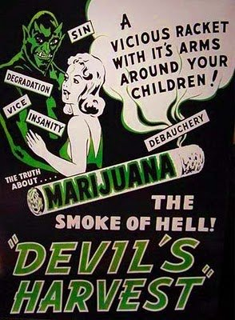
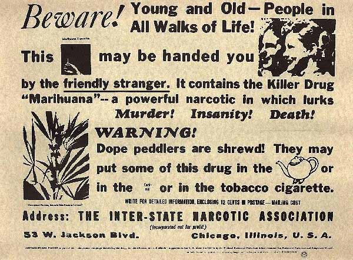
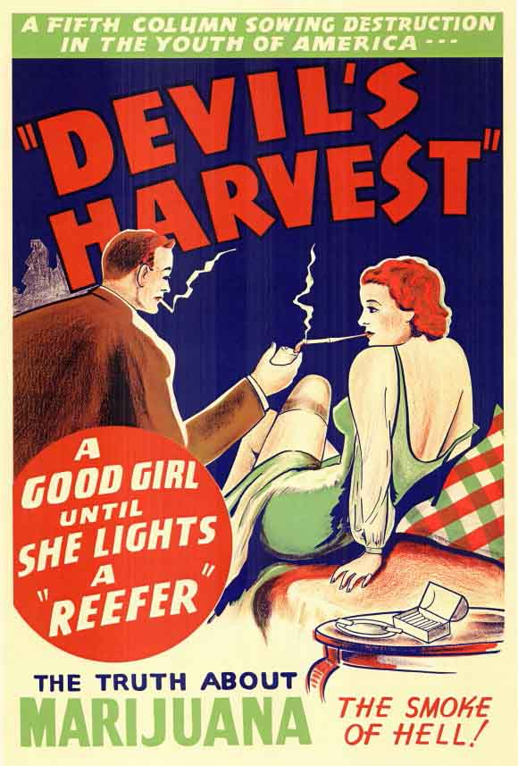
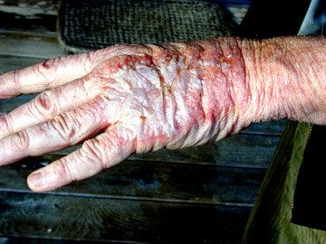
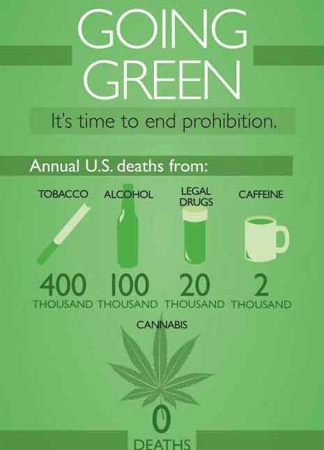
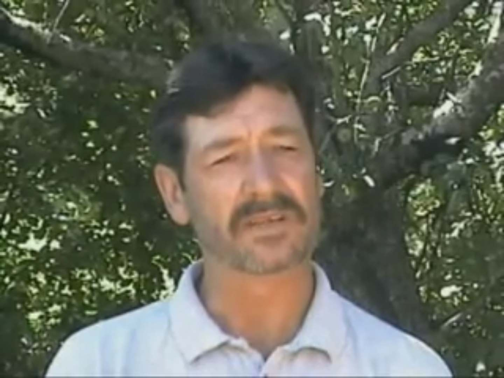
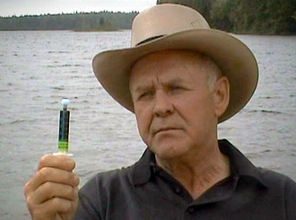
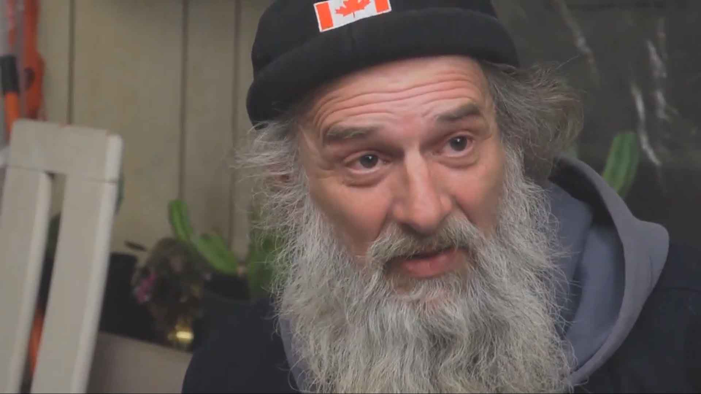
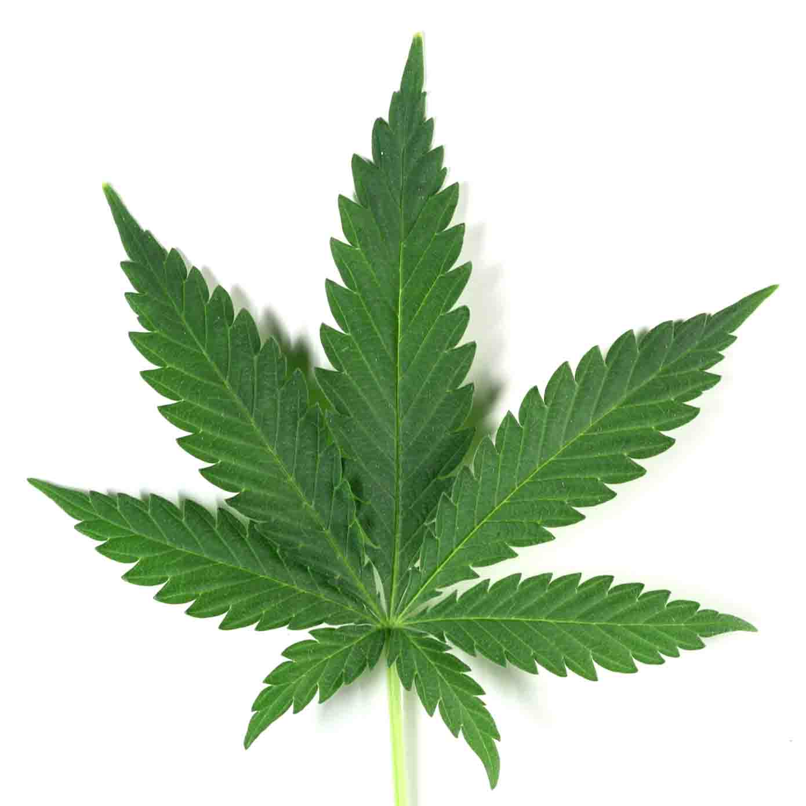

Cannabis Cures Cancer
1 in 2.3 men and 1 in 2.6 women have cancer in their lifetime. In other words I can guarantee you that if you’re reading this you have personally known someone that has past away from cancer.
But what if the cure for cancer existed. In fact, what if that same natural substance could also cure:
|
|
Sounds unbelievable?
No other plant has as many health benefits to the human body as this plant does. What is it? That’s right, the illegal plant cannabis… better known as marijuana. It’s also used to treat alcoholics (a real poison that’s legal) and recovering drug addicts, although most medical services don’t recognize this. All because of the disinformation big drug companies have feed to the public, the real benefits of cannabis is widely left unknown.



However, cannabis has been used for over 5,000 years as a medicine, making it man’s oldest and safest medication. It has absolutely no negative side affects AT ALL (used responsibly by the right person)! It is also proven that unlike opiates and their derivatives, hemp oil is not addictive. The U.S. even conducted a number of studies that showed it was impossible to link marijuana as being considered a "gateway drug." (update: of course everyone handles it differently though, depending on one's mental state will determine how much one could safely have, while there are those that are too mentally unstable to even have some without it destroying their life. Although this may not happen with the majority of its users, still it's with enough people to be worth pointing out.) However, the same can’t be said for any “prescription drug” sold over the counter today… all of which possess negative side effects (sometimes far worst than what they were meant to cure) and it’s even been proven that drugs such as painkillers can be highly addictive to some people.
So why is the public being denied the use of this medicine? The law that was put in place in the 1920’s around the world that restricted hemp’s use was solely based on the fact that drug companies cannot profit from all-natural medicines, since they cannot patent them.
The billions and billions of dollars invested within the cancer society is going towards “damage control” or treating cancer… not towards the prevention and curing of it. The more drugs bought, the higher the profit.
Many large pharmaceutical companies that still exist today sold hemp based medicines in the 1800′s and early 1900′s. They knew then what we now know. Hemp oil if produced properly is a cure-all that the pharmaceutical industry can’t patent.
To deny the truth about hemp medicine should be a criminal act. To continue hemp’s current restriction in medicine could only be considered insanity.
|
 |
FACT: Chemotherapy kills more people than it saves. Worldwide cancer experts agree that it is largely ineffective in destroying most cancers, and instead kills mostly healthy cells in the process. Studies have even shown that patients who accept chemotherapy/radiation treatment are more likely to die sooner than if they had received no treatment at all.
The medical world says that hemp still needs more studying. The question is how many more years does it take, and yet why is cigarette tobacco considered legal??? Not to mention penicillin was approved for us with less experience and data than is available on the effectiveness of Hemp.

The active ingredient in hemp oil is all-natural T.H.C. It attacks mutated cells specifically, while rejuvenating healthy ones. The only side-effects of hemp are improved health and increased perceptions of happiness, if too much is ingested than drowsiness.
Absolutely ZERO people have died from hemp. According to a 2011 post from the World Health Organization (WHO), alcohol is responsible for killing 2.5 million people worldwide in one year. If you were in charge of government, which one would you choose to make illegal for your citizens.
Since the 1950’s and 1960’s cancer and many other diseases (chromes, diabetes, allergic reactions, etc.) that were considered rare have exponentially grown with increasingly death rates that were never before seen from these diseases. The cause of all of this is due to our diet, exercise, stress levels, if we smoke, and also our environment’s airborne pollution levels. Our food supply is not fit for human consumption due to processed foods. Hormones are added to meat, making it unhealthy and unsafe for human consumption (for more on what foods to avoid click here). Yet, far too few people are doing anything to try to curve this trend.
Testimonials:

1. Eric Donkin: 5 open-heart surgeries and 5 pacemakers. Later, a blood clot developed in his right leg due to an operation, which caused severe swelling and chronic pain. He was prescribed painkiller pills, but he couldn’t take them because after a week’s time of daily usage he claimed that he would tend to become addicted to them... looking to take them for any small pain. It’s a fact that painkiller pills are highly addictive, such as: codeine, fentanyl, hydrocodone, hydromorphone, meperidine, morphine, oxycodone (oxycontine), propoxyphene, etc. One Canadian news report's headline read, “Canadians abuse prescription painkillers more than heroin.” Also, he claims that painkillers are “too hard on (his) system.” He says that they “destroy” him by taking away his strength and energy, and after a few days he will feel the side effects of the painkillers, causing different pains. After ingesting hemp oil he was relieved of all pain, kept his energy, had zero side effects, and didn't suffer from any addiction problems. It's a fact that high quality hemp oil from the proper strains (Indica) can stop pain that even morphine has no effect on. He said that he gained his life back, but without any of his previous pains.
2. Keith Donkin: Diagnosed with fast acting lung cancer, with only six months to live. After ingesting hemp oil, he’s still alive years later.
|
 |
3. Rick Dwyer: Major depression, anxiety attacks, and chronic back pain. After ingesting hemp oil, he was relieved of all of these symptoms… and the results are getting better for him over time.
4. Debbie Donkin: Abnormal mole on shoulder that turned black. After two weeks of covering it with hemp oil and Band-Aids, it was completely gone. After three days she could already start to see the results.
5. Cecil “Pooey” Hoeg: Skin cancer (melanoma). After being treated with radiation, the skin on his face was left severely “burnt” even after applying the recommended salve. After applying hemp oil on his face, his skin healed back to normal, and without the cancer. Also, he later suffered from glaucoma, which is a pressure on the eyes that damages the optic nerve, leading to blindness. After ingesting hemp oil his glaucoma ceased, and his eyesight has improved since then.
6. Margaret Dwyer: Severe migraine headaches, cist on ovaries, arthritis, bad skin allergies, snoring, and upset stomach with bad diarrhea. After ingesting hemp oil and applying it topically, all of these symptoms ceased. She even claimed to feel physically 20 years younger. Also, when hemp oil is applied to external injuries pain relief is felt within mere minutes.
7. James Albert Leblanc: With two months to live, he was considered a terminal cancer patient. After taking chemotherapy and radiation, everything inside of him became far worst. However, after ingesting hemp oil his cancer completely disappeared, and now he's still alive perfectly healthy years later against all the odds.
Government vs. Cancer Cure:
|
 |
“I want people to know how to heal themselves” – Rick Simpson
This man is the one responsible for re-discovering the cure for cancer while living in Nova Scotia, Canada.
In 2004, he contacted the Canadian Cancer Society about hemp oil curing cancer.
This was their response…
“The society does not endorse or support medical products or dietary supplements… thanks for the information. We wish you luck in your work.”
Later Rick Simpson presented about 50 affidavit documents from people swearing hemp oil cured them from a variety of medical conditions to the Supreme Court in Canada, but were all dismissed as if they meant nothing. Then on February 2, 2008 Rick attained his Supreme Court trail with 10 patients and 6 doctors ready to testify, but none were allowed on the stand. People that have been cured from terminal cancer with doctors present to back it up had been denied to present their cases. It can only seem that the justice system and cancer companies aren’t looking very hard for a cure. Over a seven day trial period, the jury finally ruled that Rick Simpson was guilty of possessing and trafficking marijuana. Even though he gave away all of his hemp oil for free and saved lives. He even contacted the local authorities prior to growing any, and told them that he was curing cancers and other illnesses with it. But none of this mattered.

Since then another man has made hemp oil and saved countless lives free of charge. He was said to stay up all night making it for others, and even spent $5,000 of his own money to travel to distribute his medicine to this one boy that desperately needed it due to brain cancer, although he only earned $10,000 a year. He was truly a selfless man, and was eventually sentenced to 3 years of prison... which is where he is currently. Please click here to watch a short video about him.
Although it’s easy to see the loss in revenues from drug companies, it’s also just as easy to see the loss of suffering if hemp oil were to be accepted. Are profits really more important than our health? Phoenix Tears is offering a worldwide internet protest to bring hemp back into mainstream medicinal use at www.PhoenixTears.ca. They also suggest contacting your local politicians and ask them…
“What are you doing about cancer?”

For those who may find it incredible that the medical establishment would ignore or even disdain such research we remind the reader that the history of the medical establishment includes examples of mule-like stubbornness, incompetence, mediocrity, greed, arrogance, and stupidity. Consider the case of Dr. Ignas Semmelweis:
In 1847, Dr. Semmelweis, a respected Hungarian physician who was concerned about the high mortality rate of women giving birth in hospital, instituted a procedure at one hospital whereby doctors washed and disinfected their hands before delivering babies. Immediately, the mortality rate dropped from THIRTY percent to near zero. Seven other hospitals followed suit with similar results.
The European medical establishment recognized Dr. Semmelweis’s achievement by blocking his applications for further research funds, vilifying and ostracizing him, and, ultimately, causing him to lose his prestigious positions at maternity hospitals. In America, the newly formed American Medical Association added insult to injury by threatening to revoke the license of any doctor caught washing his hands. Dr. Semmelweis was so distressed that women continued to die that he suffered a mental breakdown that eventually led to his death in 1865. Don’t expect a doctor working inside the system to buck the system. The risks are still too great! The advice she or he offers you is controlled by the large medical industry that makes its money from expensive cancer fighting drugs and treatments. It is an industry that doesn’t look favorably on natural supplements or other cancer treatments that they cannot patent or make a large profit from.
3 Ways of Applying Medicinal Hemp:
1. Ingest
2. Vaporize
3. Topical Applications
However, for internal disease like cancer, ingestion is necessary. Topical application only works with skin cancer or other wounds on the skin's surface, in which a Band-Aid may also be applied.
Application Instructions:
Ingesting 2 ounces (about 57 grams) of hemp oil (made from 1 pound of hemp) over 2-3 months is enough to cure most serious cancers, some people were even cured in as little as 3 days. Some skin cancer was completely cured in as little as 4 days by only putting it on a Band-Aid and covering the infected area with it. However, if the person was badly damaged from radiation treatment and chemotherapy, then 4 or 6 ounces may be needed. The person may ingest it either once, twice, or three a day at equally spaced time-intervals, depending on their condition. Each time the person needs to only ingest a very small drop of the hemp oil, about .035 ounces/1 gram or half the size of a piece of short grained dry rice.
Three times a day is recommended as a good beginning. After four days one is suppose to double the amount being taken per dose, and try to continue to do so every four days thereafter, until you have reached the point where you can ingest one third of a gram per dose. Taking the oil in this manner in the beginning allows the person time to build up their tolerance for this substance. Some people soon acquire a very high tolerance, and it's believed that the faster you can take it the sooner you will be cured.
There was a case of an 82 year old man who was ingesting 2 grams a day... he would go into town every day, and yet no one could tell he was taking it.
After being cured, or even if a person was never infected, it’s recommended for a person to still ingest one drop (.035 ounces/1 gram) every month to maintain good health.
Today's Problem:
Even if a person is lucky enough to gain the license to possess hemp, they are not allowed to collect resins or make the essential oil that contains the real medicinal value of the hemp plant. You instead are only granted permission to smoke hemp, which makes it very unlikely to cure cancer no matter how much you smoke. Pure hemp oil (not to be confused with hemp seed oil) needs to be ingested for the full healing effects of the plant to work, which is still considered illegal till this day. Most people don’t realize that or the fact that even attaining a license is harder than winning the lottery. Approximately only 2,000 people out of the 30 million people living in Canada have obtained the license so far.

Brave enough to make your own medicine? The only place on the internet where you may purchase hemp seeds, that are delivered worldwide (including the U.S.) is here: Attitude Seed Company from the United Kingdom. All you need is a pound of Indica hemp (the other type is sativa, which is best for only depression), a rice cooker, and a solvent (such as pure naphtha, which is sold as a paint thinner). Click here to watch a video to get a better idea. Also you may click here to read a detailed description of the steps you need to take.
If you live within the U.S. you may also order hemp oil from Ronnie Smith, who also resides in the United States. You may reach him by phone at: 678-362-3245. He sells the full cure at $2,000, which includes: 2 ounces of pure hemp oil and instructions.

Final Thoughts:
This is one of the many reasons why we must abandon the monetary systems of Capitalism, Socialism, and Communism, because of the inherent corruption that these systems possess. Money is a control mechanism; it is the root of the majority of our problems on Earth. To become truly free we must transition over to a system that will put people first, and rewards cooperation instead of competition. The money system instead puts profit first, if you can't see that then you don't live in reality. Research Resource Based Economy.
Wisdom-Square › Alternative Medicine › Cannabis Cures Cancer